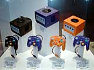

今年もやってきました！ いよいよ任天堂最大のイベント、任天堂スペースワールドの開幕です！ 今年は幕開けに、期待の新ハード、ニンテンドーゲームキューブの発表が行われます。世界が注目するハード、国内外の注目も高いのです。12時の開場と共に、一斉に会場に入ってくる人々。ステージ前に用意されたイスは次々と埋まり、いつのまにか立ち見の人たちが厚い壁を作っていたほど。全員が、いまかいまかと発表の瞬間を待ち構えています。
|
ファンファーレが鳴り、ついにステージにスポットライトがともりました！ 副社長の浅田篤がステージに登場し、待ち望んだ発表が始まります。現在のゲームソフト市場を説明し、満を持してこのハードを発売することを強調します。話の途中に、ひょいとゲームキューブを持ち上げる浅田。そのコンパクトさにビックリです。
|
 さらには、なんと発売当初のバイオレットに加え、早くも11月にはオレンジ、ブラックのカラーバリエーションが登場することを発表。本体＆コントローラのカラーバリエーションが大きなスクリーンに映し出され、会場の全員が息をのみます。
「ゲームキューブは新しい『遊び』と『驚き』を提供します」と力強く語る浅田。
|
さあ、いよいよソフトの発表です。経営企画室長の岩田聡が登場、ついにスクリーンにゲームキューブの映像が流れます！ そのすごいクオリティに会場はどよめきに包まれます。
次々繰り出されるゲーム画面は、まるで映画のよう。グラフィックの美しさもさることながら、ポリゴンで表現されたキャラクターの動きのスピード感は、いままで体験したことがありません。まさに、まったく新しいゲームの世界といえるでしょう。
|
年内発売の６タイトルのソフトが紹介されたあと、大きな拍手とともに情報開発本部長の宮本茂が登場。『どうぶつの森＋』『ピクミン』『ルイージマンション』と期待のタイトルを紹介していきます。さらに、新しいマリオとゼルダの映像も大公開。特に64とはまったく違うかわいらしいリンクのキャラクターデザインに、衝撃が走ります。そのユニークな動きに、「ほほう」「おお」といった声があがっているようです。
|
次に、注目のゲームボーイアドバンスとの連動を発表。今までベールに包まれていた情報だけに、会場の緊張が一層高まります。『コロコロカービィ』を使ったデモプレイのユニークさに、会場は笑いの渦。アドバンスをコントローラのように使って、カービィをコロコロ転がす宮本。驚くべきことには、ゲームキューブからゲームボーイアドバンスのソフトへの書き込みが行えることも発表されました。大人気ソフト『どうぶつの森＋』では、ゲームキューブからアドバンスの「離れ小島」へ遊びに行けることがわかり、驚かされました。最後に、コントローラをアピールする宮本。「日本製デザインで世界に誇れるものの１つ」と強調し、世界の任天堂の自信を実感させてくれました。
|
ここで、再び岩田が登場。ライセンシーソフトや任天堂の人気シリーズのタイトルなど、新しいゲームキューブの映像が迫力いっぱいに展開し、まるでゲームの世界に入っているかのような楽しさ。「子どもばかりでなく、全年齢層に対応するゲームキューブの奥深さ」もアピールされました。最後に、アドバンスの戦略が発表され、カードｅリーダーなどの新しい試みが披露されます。いままで通りソフト重視の姿勢を守りながらも、新しい任天堂の息吹を感じさせた発表会。大きな拍手とともに、幕をおろしました。
会場では引き続きゲームの体験会が行われています。
|